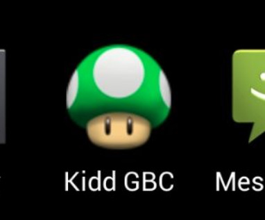

¿Qué es?
La Lost media o material perdido es todo aquello que permanece
perdido o parcialmente perdido habiendo existido antes.
Windows Longhorn
La Lost media más conocida en sistemas operativos es
WINDOWS LONGHORN, prototipo de lo que hoy conocemos como
WINDOWS VISTA. Iba a incluir un nuevo tipo de almacenamiento,
pero la idea quedó en nada y tuvieron que rehacerlo desde cero.
¿Para qué es importante la Lost Media?
La lost media es importante para rescatar materiales perdidos como:
- Episodios de series que no volvieron a emitirse desde hace años.
- Videos eliminados.
- Juegos o archivos Flash que se perdieron.
- Páginas antiguas.
También sirve para investigar cosas antiguas que ya no deberían existir.
¿Qué cosas no se pueden archivar?
Las cosas que no se pueden archivar son contenidos ilegales, como por ejemplo
leaks antiguos de Nintendo Enterprises.
Ejemplos:
- El famoso Teraleak
- El Paladin leak
- Emeraldsleak
Son filtraciones masivas con demos, prototipos y archivos de desarrollo de
NINTENDO que no debieron encontrarse, ya que descargarlos o
distribuirlos es ILEGAL.
Caso de Lost Media propio
¿Qué es un emulador?
Un emulador es un programa que sirve para simular un entorno como una videoconsola.
Permite ejecutar los archivos correspondientes a las ROMs y así poder jugarlos.
KIDDGBC

Figura 1. LOGO de la app encontrada
¿Qué fue? Fue un emulador de la Game Boy Color
para el HTC Dream, el primer teléfono con Android. Fue desarrollado entre 2007 y 2009
por un desarrollador poco conocido: Teragadgets. Fue publicado en
AppMarket (más tarde Play Store) y en XDA Developers.
¿Cómo se encontró?
- Primero busqué en la aplicación 4shared ordenando los resultados desde el más antiguo.
- Encontré un archivo
.b1 de un pack con APKs en un formato obsoleto.
- Lo extraje utilizando la plataforma b1-free-archive.

LINK A LA PARTE 2 DE LA PAGINA
Ir a lost media parte 2